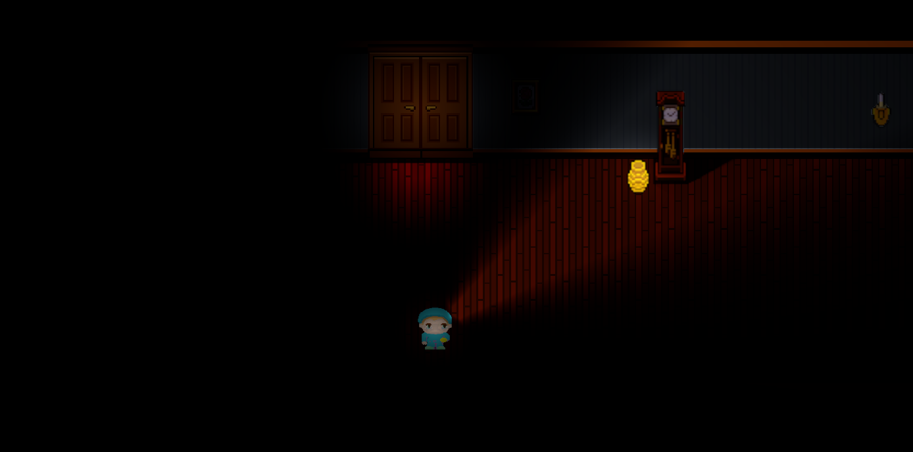

Proyecto Destacado
Nightlight (Game Jam)
Unity · C# · Horror · Game Jam


Desarrollado durante una Game Jam con enfoque en atmósfera y suspenso. Contribuí en la implementación de audio, animación de la linterna y eventos de jumpscare para reforzar la inmersión y generar tensión constante en la experiencia del jugador.
✔ Diseño de atmósfera mediante audio y eventos de tensión
Jugar ahora